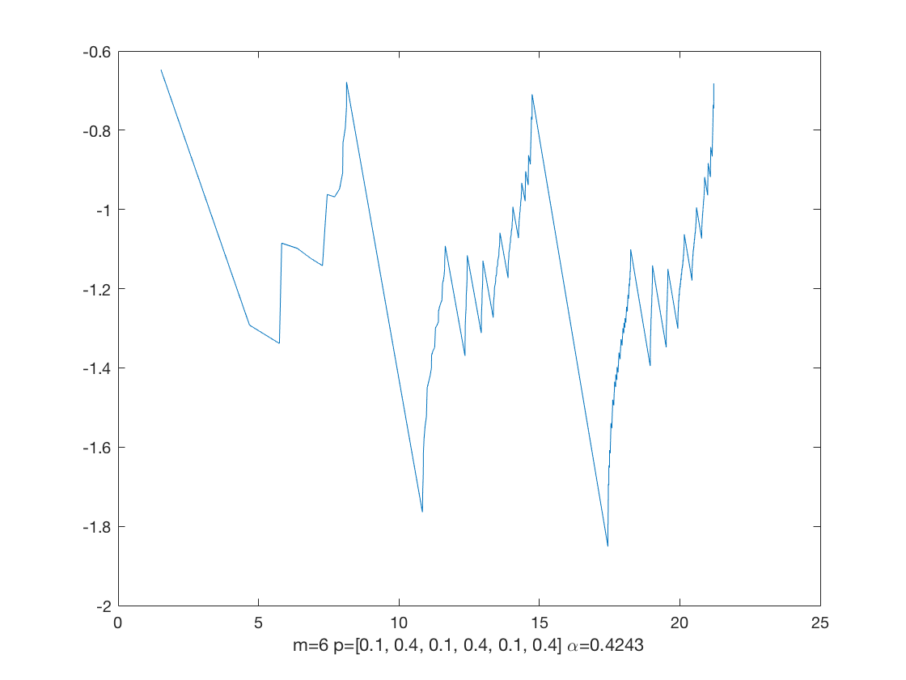
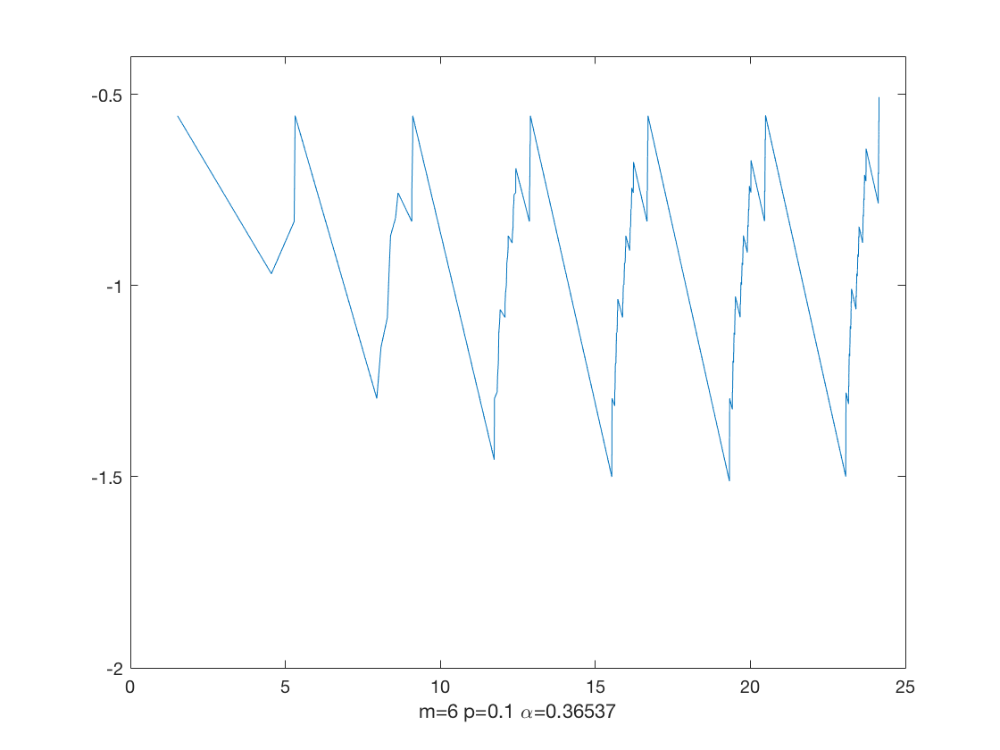
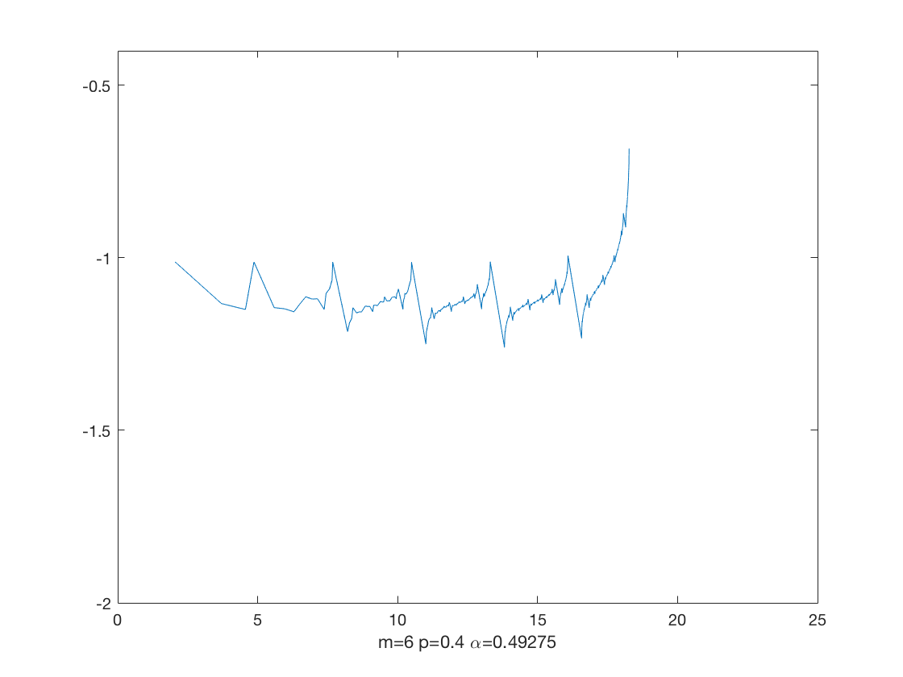

Aself-Similar Weyl Plots
We can generalize our construction symmetric Laplacians by using a sequence of measure parameters instead of just one measure parameter. The below give an example of the Weyl plot for this Laplacian at level 6, by alternating between p=0.1 and p=0.4 at each level. The images are available in pdf format here.

